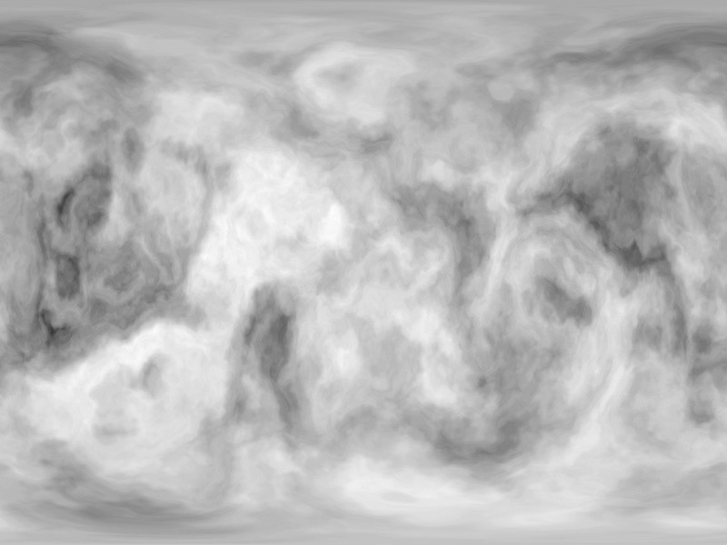

POV-Ray Object Collection
|  |
The scene file generates the planet map image by placing a spherical camera at the centre of a sphere with a texture applied to it and with an ambient finish so that no light is needed in the scene. You can effectively randomise the pattern, by moving the camera and sphere to a different part of the pattern. This is controlled by adjusting the 'RandomSeed' variable which is defined as a 3D location vector.
The 'LevelOfDetail' variable can be adjusted to regulate the size of the details visible:
To add more detail to the planet map use layers and flatten image, then decrease contrast and add another level of detail There comes a point when you can't add any more detail, when the next level of detail turns continents into immense clusters of islands. For me, using levels 1-8 is good enough. Add level 32, however, and it becomes useless (unless you are trying to make a planet of islands) and you have to go to the Edit menu and click that Undo command.
The 'TerrainType' variable specifies what type of noise to use when generating the map.
You can use any pattern, even non-random ones, but I recommend bozo and wrinkles. Agate, granite and crackle also give good results. Heck, even leopard and ripples look good with the right amount of Complexity!
The 'NoiseType' variable tells POV-Ray what version of the noise to use: 1 creates plateaus at the highest points, 2 is the old noise generator fixed (no plateaus) and 3 is Perlin noise.
Use POV-Ray command line options to control the resolution of the generated texture file. The following settings create maps of a width and height suitable for Celestia or Anim8or